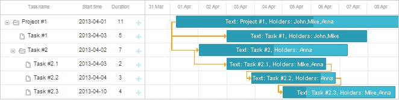

To gain the desired look for the Gantt chart, dhtmlxGantt provides 2 objects:
All the configuration options are declared in the gantt.config object.
To set the desired option, just write it as it's stated in this documentation.
Beware, configuration options should go before the code line with dhtmlxGantt initialization.
gantt.scales = [
{ unit: "year", step: 1, format: "%Y" }
];
gantt.init("gantt_here");
See the full list of the gantt.config properties in "Gantt API:Properties".
Templates can be used to change the displaying of dates and labels.
To define a template, just write it as it's stated in this documentation. Remember, the definitions of templates should go before the code line with dhtmlxGantt initialization.
gantt.templates.task_text=function(start,end,task){
return "<b>Text:</b> "+task.text+",<b> Holders:</b> "+task.users;
};
gantt.init("gantt_here");

See the full list of available templates in the Gantt API:Templates section.
Related sample: Styling task bars with events
Back to top